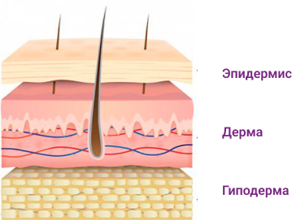
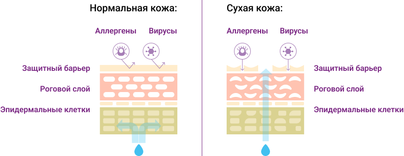

Сухость кожи
Взаимосвязь дефицита железа и сухости кожи
Организм старается максимально наполнить жизненно важные для функционирования органы и системы, а кожа, волосы, ногти снабжаются по остаточному принципу. Испытывая недостаток кислорода, кожа и волосы становятся сухими и слабыми, а в более тяжелых случаях наблюдается выпадение волос. Появляются зуд и шелушение кожи1.
Как кожа использует железо?
В нашей коже находится два типа волокон: коллаген и эластин. Коллагеновые волокна — это структурные волокна кожи. Считается, что они не очень хорошо растягиваются. Волокна, состоящие из эластина, делают кожу упругой, гладкой и эластичной1.
Если железа недостаточно, клетки кожи не смогут выполнять свои функции, что приводит к:
- изменению цвета кожи из-за уменьшения поступления кислорода в кожу и кровеносные сосуды
- плохому росту клеток кожи, приводящему к шелушению, зуду кожи
- нарушению роста волос, что приводит к выпадению волос
Все эти изменения могут отрицательно повлиять и на рост ногтей. В тяжелых случаях железодефицит может привести к состоянию, называемому койлонихия — это аномалия роста ногтей. Из-за этого ногти кажутся сплющенными и имеют вогнутости с приподнятыми краями, которые также называются ложкообразными ногтями. Углубление в ногте обычно достаточно большое, вмещает каплю жидкости. Это происходит из-за плохого роста ногтей, вызванного нарушением транспортировки кислорода, недостаточным кровоснабжением и поступлением питательных веществ при железодефицитной анемии2.
Также было замечено, что низкое содержание железа может негативно сказаться и на обновлении клеток кожи и процессах заживления ран1.
Кожный зуд при железодефиците
Кожный зуд при железодефиците может быть результатом повреждения клеток, а именно: сухой, шелушащейся и раздраженной кожи.
При недостаточном поступлении железа в организм может наблюдаться диффузное выпадение волос (диффузная алопеция). Ломкие и сухие волосы склонны к выпадению3.
Чтобы избежать последствий железодефицитной анемии, таких как сухость и шелушение кожи, необходимо ежегодно сдавать анализ крови на определение уровня гемоглобина, содержания железа и ферритина (белок-депо железа).
Другие симптомы железодефицита


Лечение дефицита железа


дефицита железа
Список литературы
- Iron deficiency anaemia Lopez A, Cacoub P, Macdougall IC, Peyrin-Biroulet Lancet. 2016 Feb;387(10021): 907-16.
- How we diagnose and treat iron deficiency anemia. Auerbach M, Adamson JW Am J Hematol. 2016; 91(1):31.
- The diagnosis and treatment of iron deficiency and its potential relationship to hair loss. Trost LB, Bergfeld WF, Calogeras E Acad Dermatol. 2006; 54(5):824.